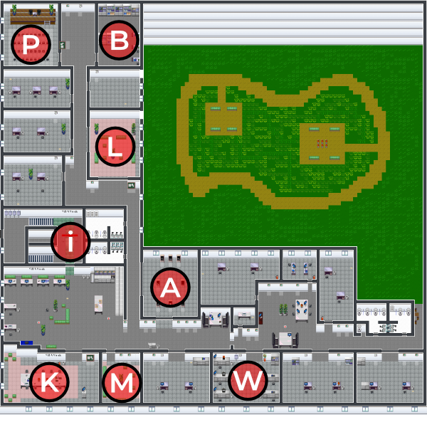

Karte und Programm

- [i] Information
[K] Konferenzraum:
16:15 Uhr kurze Begrüßung
- [W] Werkstatt
ab 17:00 Uhr Werkstattgespräch 3D-Druck mit Philipp Süß
- [A] Ausstellung
3D-Druck in der Anwendung
- [P] Podium
"Additive Fertigung - Neue Möglichkeiten der Zusammenarbeit" (Aufzeichnung)
Impulsgespräch mit Philipp Süß und Michael Kutz (KTDM) [ca. 25 Min]
- [L] Lounge
freies Gespräch "Netzwerken in der Pandemie"
- [M] Meetingraum
Raum für freie Diskussion
- [B] Bibliothek
Geschichten rund um den industriellen 3D-Druck (BLOG)